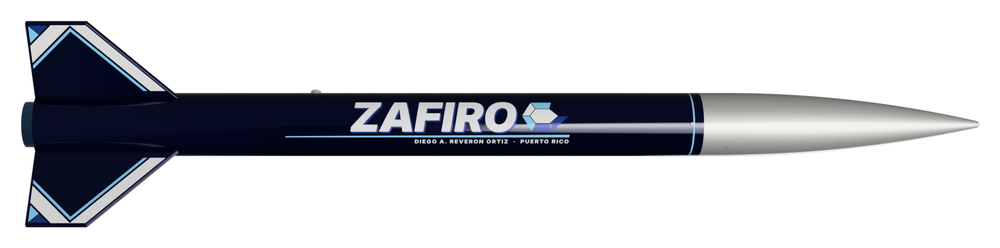
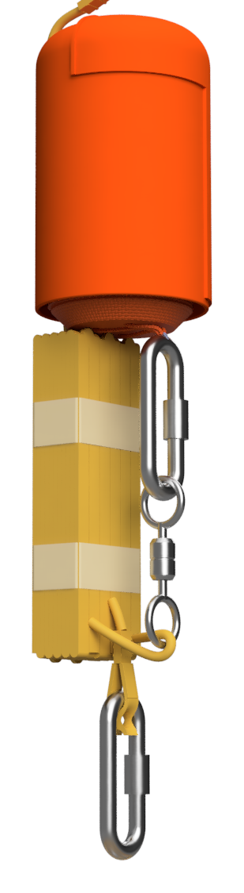
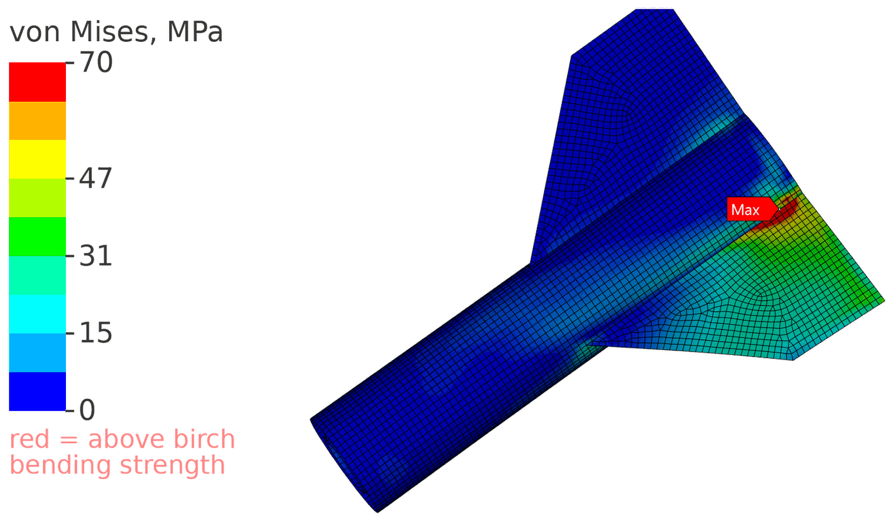
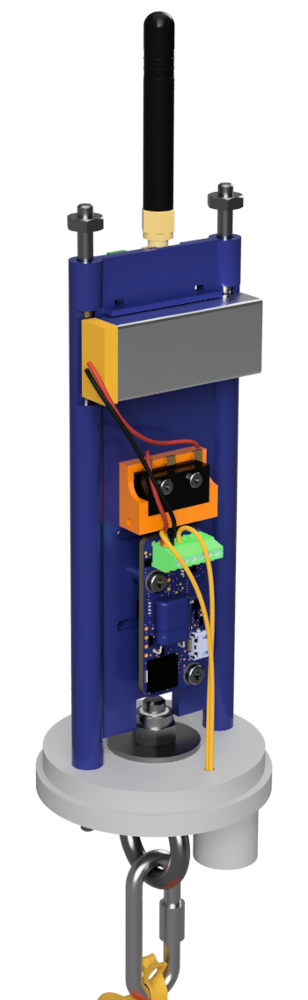
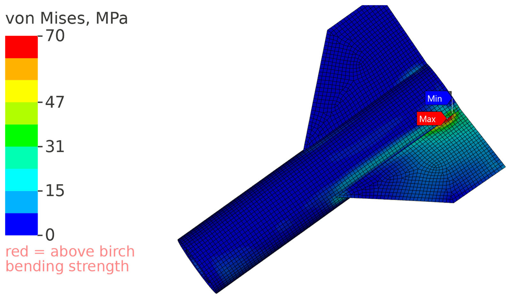
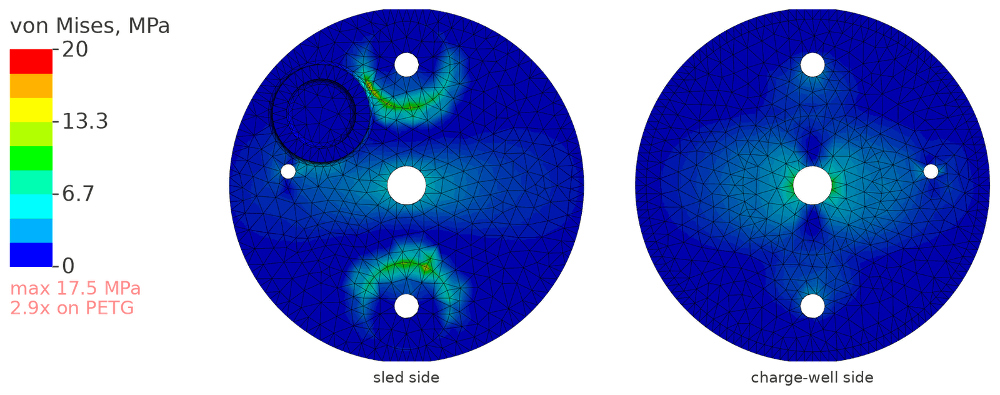
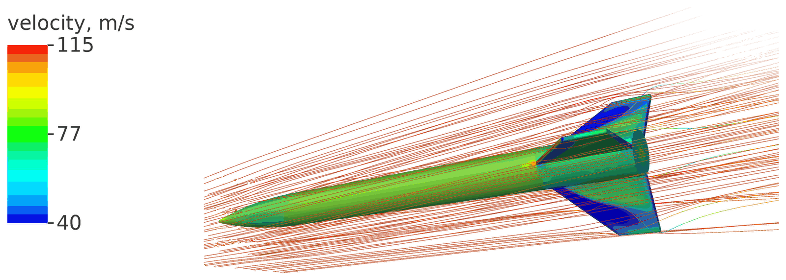
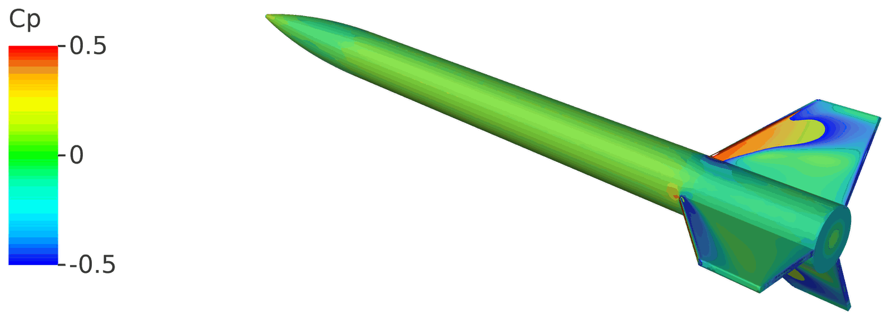

ZAFIRO I
Level 1 certification rocket · Designed and built 2026, flying late 2026
2.68 inch Blue Tube airframe, AeroTech I218R, about 3,100 ft apogee.

ZAFIRO I in Fusion 360. 2.68 inch Blue Tube, navy with a silver nose.
ZAFIRO I is the rocket I'm flying for my Level 1 high power certification. Blue Tube airframe, 38 mm motor mount, an AeroTech I218R, 1,650 grams on the pad and about 3,100 feet of apogee. Recovery is single deploy: a Featherweight Blue Raven fires the ejection charge at apogee; the motor's 14 s delay charge backs it up 2.4 s later (14 s after burnout). Almost everything that isn't the tube is printed PETG, from the fin can rings to the two-piece nose to the AV bulkhead with its charge well built in. The fins are 6 mm birch.
Most of the design decisions were about parts count and about what I could prove. Two printed parts replace the plywood centering rings: an aft ring with glue grooves and a forward cap that doubles as the motor bulkhead and carries the aft eyebolt on a captive nylock. The nose is two halves bonded on a lip, with #8-32 nuts embedded during a print pause so the bay rods thread straight into it. Two nylon shear pins hold the nose at 1.9 times the ejection load, enough to stay closed under drag and let go when the charge fires.
OpenRocket gives 2.05 calibers on the pad and 122 ft/s off a 6 foot rail. Six Fluent cases put the center of pressure 1.3 to 2.2 inches further aft than Barrowman, so the margin is better than it looks, but they also put drag at Cd 0.75 instead of 0.51, which would bring apogee down to about 2,640 feet. An Explicit Dynamics landing at 4.9 m/s, tail first, showed the leading fin root reaching 129 MPa on concrete, about twice what birch plywood takes, and 79 MPa on sand. Making the fin stiffer doesn't solve this, because on hard ground the fin is the softest part of the impact. The plan is to land on grass and lay good quarter inch fillets.
What I know I haven't proven yet: the forward cap and nose boss geometry wouldn't mesh, so those are hand calculations for now, 2.5x and 8x. A washer I modeled into the cap pocket turned out to be impossible to install, which I caught on October 30, so the nylock now bears directly on the plate and gets an epoxy bed and a 100 to 150 lbf pull test before the cap is glued. That pull test, a nose drop test and a ground test of the 1.0 gram charge all happen before it flies.
The exterior model, exported from Fusion 360. Drag to turn it, scroll to zoom.28,800 triangles, 1.5 MB

The recovery train: chute in its bag, Nomex, swivel and quick links.

Equivalent stress in the fin can during a 4.9 m/s landing on concrete. The leading fin root exceeds the plywood bending strength (70 MPa, red) from about 1.5 to 4 ms, peaking at 129 MPa at 2.3 ms. Expect a cracked fin root or popped fillet on a hard-surface landing, not tube damage. Color scale capped at 70 MPa, the birch plywood bending strength. Red means above strength.

The printed AV sled: Blue Raven, battery, GPS and the bulkhead with its charge well.

Same landing on sand (Ansys SAND material, 100 mm bed). The root spikes to 79 MPa at 1.7 ms and is below 54 MPa by 2.5 ms. Marginal; survival likely, and the real 1/4 in fillets add margin.

AV bulkhead under a 260 lbf snatch load: 17.5 MPa, about 2.9x on PETG.

Ansys Fluent, Mach 0.3 at 8 degrees angle of attack. Streamlines colored by velocity.

Surface pressure at 8 degrees. The fins carry the load that moves the center of pressure aft.
Flight simulation
OpenRocket, AeroTech I218R in 5 mph wind. Rail exit at 0.27 s and 122 ft/s, burnout at 1.5 s, apogee 3,122 ft at 13.1 s. Dashed lines mark burnout, apogee and the motor backup at 15.5 s.
Stability off the rail stays above 1 cal up to 20 mph. Mean of 10 gust seeds per wind speed.
Drift under the 30 in chute sets the wind limit: 1,269 ft at 5 mph, 5,045 ft at 20 mph.
Stability margin at Mach 0.3. Fluent puts the center of pressure 1.3 to 2.2 in further aft than Barrowman, so OpenRocket is the conservative design number.
Build
Printing the fin can parts. Photo coming.
Fins in the alignment jig. Photo coming.
Paint and finish. Photo coming.
The finished rocket. Photo coming.
AV bay, assembled. Photo coming.
Flight
On the pad. Photo coming.
Liftoff. Photo coming.
Recovery and the flight data. Photo coming.